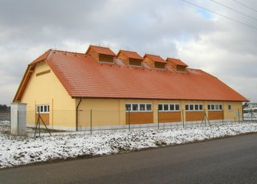

Hlavní obory činnosti
Spolupráce s urbanistickými ateliery na zpracování územně plánovací dokumentace - vodohospodářská část.
Poradenství obcím - koncepční rozvoj infrastruktury - koordinace rozvoje obce v souvislostech dle územního plánu.
- Inženýrské sítě (vodovod, splašková a dešťová kanalizace, plynovod, veřejné osvětlení, rozvody NN)
- Čistírny odpadních vod
- Územně plánovací dokumentace
- Koncepční a poradenská činnost
- Pozemní stavby
- Životní prostředí
- Inženýrská činnost
Politika jakosti
Společnost HW PROJEKT, s.r.o. působí jako projektová a inženýrská firma v oborech vodního hospodářství a pozemních staveb. Jako rámec pro řízení jakosti vyhlašuje společnost následující zásady politiky jakosti:
- Udržovat a zlepšovat systém managementu zavedený podle ČSN EN ISO 9001:2001 pro projektování ve výstavbě a inženýrskou činnost.
- Zabezpečit komplexní služby zákazníkům v projektové a inženýrské činnosti.
- Neustále zlepšovat kvalitu svých služeb na základě analýzy vlastní práce a nejnovějších trendů v oborech působnosti.
- Zajišťovat a poskytovat zdroje pro trvalý růst společnosti, její účinné řízení a další rozvoj zavedeného systému managementu.
- Ve stanovených intervalech přezkoumávat přijaté cíle a cílové hodnoty v oblasti jakosti.
V Praze dne 21.7.2006
Ing. Martin Horejš, v.r.
jednatel
Firma byla založena v roce 2005 a zabývá se projektovou a inženýrskou činností v oboru vodohospodářských a pozemních staveb,
zpracováním projektové dokumentace pro územní řízení, stavební povolení, provedení stavby, zadávací dokumentace pro výběr
zhotovitele stavby, projednáním projektové dokumentace a zajištěním vydání územního rozhodnutí a stavebního povolení.
HW PROJEKT, s.r.o.
info@hwprojekt.cz
Profil společnosti HW PROJEKT
Společnost HW PROJEKT vznikla v nedávné době s koncepcí moderně a systémově strukturované firmy zajišťující komplexní projekční a inženýrské služby projektanta včetně inženýrské činnosti zákazníkům dle současných požadavků.
Jedná se o spolupráci zkušených inženýrů, kteří v minulosti zajišťovali zakázky a jejich koordinaci na úrovni vedoucích projektů a mají zkušenosti s projekty z oblasti inženýrských staveb.
Zároveň má firma vybudovaný okruh stálých externích spolupracovníků v profesích statika staveb, elektro, zdravotechnika, vzduchotechnika, topení a plyn.
Vybavení firmy
Do základního vybavení patří výpočetní technika a programy pro stavební projekci. Firma je samostatná i po stránce planografického zpracování zakázek.
Reference
Jedná se o referenční projekty, které zajišťovali pracovníci firmy v předcházejících letech jako vedoucí projektů:
Inženýrské sítě
- Jihlava WWTP and Sewer System Upgrading - připojení obcí Antonínův Důl a Pávov a městské části Bedřichov na centrální stokový systém města Jihlavy - (realizační dokumentace)
- Vodovody Veľký Krtíš - rekonstrukce a doplnění systému zásobování pitnou vodou v rámci okresu - (stavební a realizační dokumentace)
- Průmyslová zóna Kolín - splašková kanalizace DN400 + výtlak D225 + čerpací stanice s napojením na stávající ČOV, vodovodní řady pro sektor C, D - (stavební a realizační dokumentace)
- Mladíkov VI - kanalizace splašková a dešťová, vodovod, plynovod, komunikace, chodníky - (kompletní PD)
- Inženýrské sítě a komunikace, komerční zóna Čestlice - vodovod DN150 - délka 6,3km, splašková kanalizace DN300 - délka 4,5km, čerpací stanici splaškových vod, kanalizační výtlaky, dešťová kanalizace do DN600 - délka 2,4km, plynovod a komunikace včetně chodníků - (kompletní projekt, výběrové řízení)
- Rekonstrukce Palackého nám. v Dobrovici - kanalizace, vodovod - (zadání, koncepce řešení, projekt)
- Splašková kanalizace Jirny, Nové Jirny - DN300 délky 11,1km, 6ks čerpacích stanic splaškových vod, kanalizační výtlaky D110 délky 0,85km - (kompletní projekt, podklady pro výběrové řízení)
- Kanalizace Újezd/Lesy - odkanalizování ulic Starokolínská a Novosibřinská v Městské části Praha - Újezd nad Lesy. Kanalizace jednotná DN300 - DN600, délky cca 4,65km - (studie, projekt)
- Kanalizace a vodovod Kocanda - odkanalizování obce DN300 délky 2,44km, 3ks čerpacích stanic, kanalizační výtlaky, vodovod DN150 délky 2,35km - (kompletní projekt)
- Vodojem Modletice a přívodní řady - přívodní řad DN200 délky 2,68km, zvyšovací čerpací stanice, vodojem 2x650m3, vodovodní řady DN200 délky 1,25km - (kompletní projekt)
- Průmyslová zóna Kopidlno - příprava infrastruktury - vodovod, kanalizace, ČOV, plynovod, retenční nádrže, revitalizace vodoteče - (zadání, dokumentace pro územní řízení)
- VTL plynovod pro RS Čestlice - VTL potrubí DN100 délky 1,2km, regulační stanice 10 000 m3/h - (projekt stavby)
- STL plynovod Jinočany - komplexní plynofikace obce - (zadání, projekt stavby)
- STL plynovod - komerční zóna, Čestlice - (kompletní projekt)
Čistírny odpadních vod
- ČOV Libušín - 2500EO, Qd = 500m3/den, rekonstrukce řešící doplnění a obnovu technologického zařízení, stavební úpravy - (projekt stavby)
- ČOV Jirny - 3000EO, Qd = 634,2m3/den, 3-linková mechanicko-biologická ČOV s nízkozatěžovanou aktivací a aerobní stabilizací kalu, kompletně zastřešená - (kompletní projekt, výběrové řízení)

- ČOV Zdiměřice - 2100EO, Qd = 336m3/den, 2-linková mechanicko-biologická ČOV s nízkozatěžovanou aktivací a aerobní stabilizací kalu, kompletně zastřešená - (kompletní projekt, výběrové řízení)
- ČOV Kocanda - 1500EO, Qd = 340m3/den, 2-linková mechanicko-biologická ČOV s nízkozatěžovanou aktivací a aerobní stabilizací kalu, kompletně zastřešená - (kompletní projekt, výběrové řízení)
- ČOV Jinočany - 1400EO, Qd = 314m3/den, 2-linková mechanicko-biologická ČOV s nízkozatěžovanou aktivací a aerobní stabilizací kalu, částečně zastřešená - (kompletní PD, výběrové řízení)
Územně plánovací dokumentace
- Průmyslová zóna Kopidlno - změna územního plánu města Kopidlno
- Hostivice - územní plán města - vodohospodářská část
- Urbanizace území při rychlostní komunikaci R52 v úseku Brno - Medlov, Jižní Morava
- Průhonice - Čestlice - Zdiměřice - územní plán sídelního útvaru (průzkumy, koncept, návrh)
- Neratovice, Libiš, Kojetice - územní plány obcí (průzkumy, koncept, návrh)
Koncepční a poradenská činnost
- Plán rozvoje vodovodů a kanalizací v Jihočeském kraji - Plánovací dokumentace v rámci projektu A 1/4 - Rozvoj vodohospodářské infrastruktury na území Jihočeského kraje. Koncepce řešení zásobování pitnou vodou včetně vymezení zdrojů povrchových a podzemních vod uvažovaných pro účely úpravy na pitnou vodu a koncepce odkanalizování a čištění odpadních vod v daném územním celku. Textová část, grafická část a databáze vstupních údajů, koncept včetně projednání a zapracování připomínek, čistopis.
Pozemní stavby
- TESCO - obchodní zařízení & P+R Skalka II - řešení splaškové a dešťové kanalizace, lapoly, retenční nádrže, vodovod, požární nádrž
Životní prostředí
- Modernizace traťového úseku Červenka - Zábřeh - posouzení kapacity mostu přes Slavoňovský a Rájecký potok
- Modernizace trati Votice - Benešov u Prahy - posouzení kapacity Srbického potoka
- Modernizace traťového úseku Praha - Libeň - Běchovice - návrh odvodnění železniční trati, posouzení odtokových poměrů přilehlých ploch a mostních objektů
- Revitalizace Řepského potoka - úprava v délce 1,6km
- Revitalizace Drahaňského potoka - úprava 0,9km
Inženýrská činnost
- Zjištění a posouzení současného stavu, návrh koncepčního řešení
- Zajištění projednání projektové dokumentace, vydání územního a stavebního povolení
- Spolupráce s investorem v rámci výběrového řízení
- Spolupráce s investorem při dokončení stavby
- Autorský dozor
Kontakt na HW PROJEKT
HW PROJEKT, s.r.o.
Kontaktní osoba: Ing. Martin Horejš
Sídlo firmy:
V Štíhlách 1254
142 00 Praha 4 - Krč
ičo: 272 30 601
Kancelář firmy:
Pod Lázní 1026/2
140 00 Praha 4 - Nusle
tel.:
+420 241 400 949
+420 241 400 950-951
fax:
+420 241 400 858
e-mail:
Živnostenský list
- Projektová činnost ve výstavbě
- Inženýrská činnost v investiční výstavbě